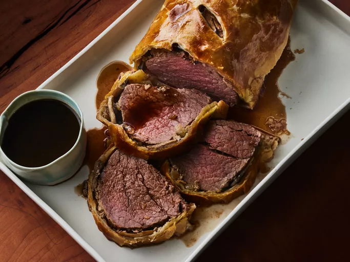

Beef Wellington

This beef Wellington recipe makes an impressive beef tenderloin wrapped in puff pastry and includes how to make a rich red wine sauce to serve with it. It's easier than you think to make and perfect for holiday entertaining! The beef tenderloin is best served medium-rare.
Ingredients
- 2.5lbs beef tenderloin
- 4tbsp butter, softened, divided
- 2tbsp butter
- 1 onion, chopped
- salt and pepper to taste
- 1 package frozen puff pastry, thawed
Steps
- Preheat the oven to 425 degrees F (220 degrees C).
- Place beef tenderloin in a baking dish. Spread 2 tablespoons softened butter over beef.
- Bake in the preheated oven until browned, 10 to 15 minutes. Remove beef from the pan and reserve pan juices; allow beef to cool completely.
- Increase oven temperature to 450 degrees F (230 degrees C).
- Melt 2 tablespoons butter in a skillet over medium heat. Sauté onion and mushrooms in butter for 5 minutes. Remove from heat and let cool.
- Mix paté and remaining 2 tablespoons softened butter together in a bowl; season with salt and pepper. Spread paté mixture over beef. Top with onion and mushroom mixture.
- Roll out puff pastry dough to about 1/4-inch thickness and place beef in the center.